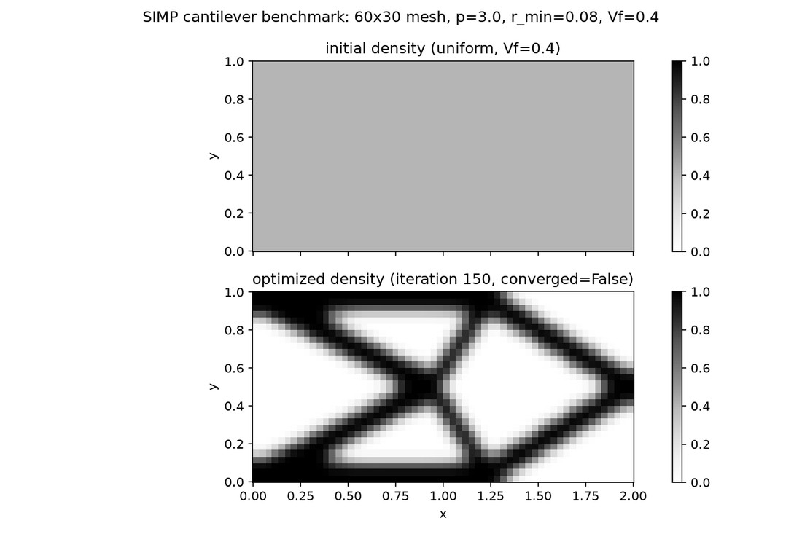

Finite elements · Optimisation
My contribution
I implemented a 2D elasticity solver and SIMP optimiser, verifying displacement convergence and compliance sensitivities.
Cantilever compliance: 617.9 → 101.4 after 150 iterations; the mesh study is not yet quantitatively converged.
Problem
Finding the material layout within a fixed design domain and volume budget that minimises structural compliance under a fixed load, using a density-based (SIMP) formulation.
Approach
P1 vector finite elements for plane-stress/strain linear elasticity; SIMP material interpolation; self-adjoint compliance sensitivity; Bourdin-style density filtering; an optimality-criteria (OC) update.
Verification
Elasticity solver verified by manufactured solutions (O(h²) displacement-L², O(h¹) H¹ convergence); compliance sensitivity verified by a Taylor-remainder test before being trusted for optimisation.
Key finding
Canonical cantilever benchmark: compliance reduced from 617.86 to 101.39 after 150 optimality-criteria iterations. The mesh-resolution study is mesh-independent-looking but not quantitatively mesh-converged: compliance is still decreasing by about 14% between the two finest tested meshes.
{kind=link}
